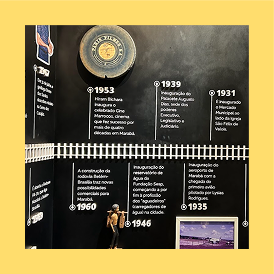
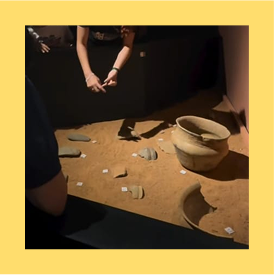

Marcos Regionais

Ciclos

Minérios e Geologia


Arqueologia
Zoologia

Etnologia Indígena

faça-nos uma visita
entrada gratuita!
Terça a Sexta: 09h às 17h
Sábado e Domingo: 09h às 13h
R. Cinco de Abril - Velha Marabá, Marabá - PA

Um pouquinho do Museu...
Algumas obras de artistas locais

Zoologia, cultura e muito mais...


Nossa História

Onde a História de Marabá Começou
Inaugurado em 08 de agosto de 2020 e localizado no núcleo histórico da cidade de Marabá, o Museu Municipal Francisco Coelho leva o nome do fundador da cidade, um comerciante maranhense de Barra do Corda que chegou à essa região no final do século XIX, por meio do comercio de gado, e em 1898 se instalou na faixa de terra entre rios Tocantins e Itacaiúnas, onde implantou um ponto comercial chamado Casa Marabá, em homenagem à um poema de Gonçalves Dias.